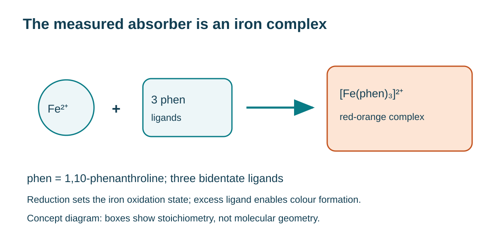
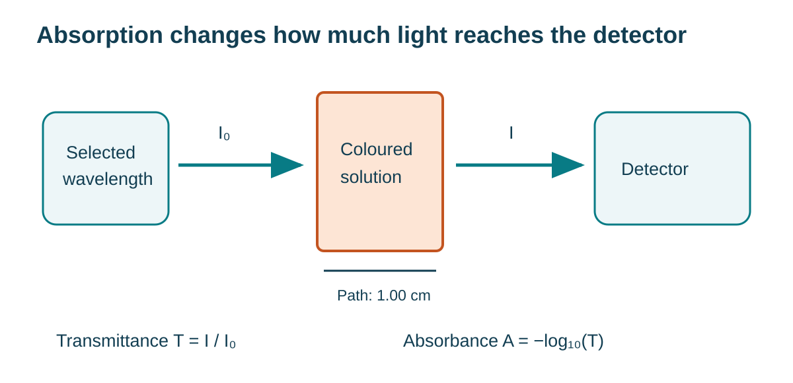

install.packages(c("readr", "dplyr", "ggplot2", "knitr", "rmarkdown"))UV and visible absorption
Measuring iron in a supplied water sample
Interactive experiment
Explore the browser demo: What happens to transmitted light and a concentration estimate when absorption or stray light changes? Predict first, change one condition, then explain the result. Export a CSV to reproduce one calculation or plot in R.
The analytical question
How much dissolved iron is in the supplied filtered water, and which results are supported by the measurements? We will make a coloured iron complex, use its light absorption to estimate concentration, then check the preparation factor, calibration, and independent quality-control result.
Use your familiar R project, CSV, plotting, and straight-line skills. The new steps are matching preparation records by ID and accounting for uncertainty when converting a signal to concentration.
Download the complete project, extract it, and open analyticalchem.Rproj. Keep report.Rmd at the project root. The project needs R packages readr, dplyr, ggplot2, knitr, and rmarkdown. If required, install them once in the R console:
All measurements here are simulated. This is an analysis exercise; use an approved practical protocol for any actual laboratory work.
Make an absorber we can measure
Iron(II) reacts with 1,10-phenanthroline, abbreviated phen, to form a red-orange complex:
\[\mathrm{Fe^{2+} + 3\,phen \rightleftharpoons [Fe(phen)_3]^{2+}}\]
Three bidentate ligands coordinate one iron ion. We measure the complex near 510 nm. Reduction maintains the iron(II) state; controlled acidity and excess ligand support colour formation. University laboratory background

For this exercise, assume quantitative reduction and complex formation and no iron loss. The measurand is mg Fe/L in the supplied filtered water, including iron converted to Fe(II) in the assumed preparation. It is not the original Fe(II) concentration before treatment. No evidence about particulate iron or digestion recovery is supplied.
Predict: if reduction is incomplete, will the result be biased high or low? Explain using the species that absorbs the light.
Connect the apparatus to absorbance
At a selected wavelength, light passes through a cuvette. The detector measures transmitted intensity \(I\) relative to reference intensity \(I_0\):
\[T = I/I_0, \qquad A = -\log_{10}(T)\]
A reagent blank contains the preparation reagents without the analyte and accounts for their background under matched conditions. Absorbance in these files is already referenced to a reagent blank. Do not blank-correct it again.

A transmittance of 0.50 corresponds to absorbance 0.301. If twice as much analyte doubles absorbance within the linear range, it does not halve transmittance: \(T=10^{-A}\).
For an appropriate dilute solution at fixed wavelength and path length, Beer–Lambert behaviour is \(A=\varepsilon l c\), with \(c\) in mol/L when using a molar absorptivity. Here our calibration uses mg of elemental Fe/L, so its slope has units L/mg Fe. Do not substitute that slope into a molar equation without converting the concentration basis.
Choose the wavelength from a spectrum
library(readr)
library(dplyr)
library(ggplot2)
spectra <- read_csv("data/spectra.csv", show_col_types = FALSE)
ggplot(spectra, aes(wavelength_nm, absorbance, colour = trace)) +
geom_line() +
labs(x = "Wavelength (nm)", y = "Absorbance", colour = "Solution") +
theme_minimal()
The spectral shape supports choosing 510 nm for a strong response. A maximum also makes a small wavelength-setting error less consequential than on a steep spectral flank. It does not prove that other sample components cannot absorb. This simulated envelope is not a reference spectrum for identifying a compound.
Each row is a wavelength in one scan. These rows do not give hundreds of independently prepared standards.
Fit the familiar calibration
standards <- read_csv("data/standards.csv", show_col_types = FALSE)
fit <- lm(absorbance ~ standard_mg_l, data = standards)
coef(fit)
a <- unname(coef(fit)[1])
b <- unname(coef(fit)[2])
ggplot(standards, aes(standard_mg_l, absorbance)) +
geom_point() +
geom_abline(intercept = a, slope = b) +
labs(x = "Iron in final solution (mg Fe/L)",
y = "Absorbance at 510 nm") +
theme_minimal()
The fitted relationship is approximately \(A=0.003874+0.198799c\). The nonzero intercept is estimated, not forced to zero. Its existence alone does not identify the source of the offset.
The concentration is deliberately set; absorbance is the response. Fitting standard_mg_l ~ absorbance describes a different regression. Estimate an unknown using the inverse of our fitted response model:
\[\hat c_{final} = (\bar A_{unknown}-a)/b\]
standards <- standards |> mutate(residual = residuals(fit))
ggplot(standards, aes(standard_mg_l, residual)) +
geom_hline(yintercept = 0, linetype = "dashed") +
geom_point() +
labs(x = "Iron in final solution (mg Fe/L)",
y = "Observed minus fitted absorbance") +
theme_minimal()
Look for curvature, changing spread, and unusual observations. Small residuals on standards cannot establish recovery or selectivity in an unknown water. Do not remove a point simply to improve the fit.
Match the measurement to its preparation
P01 and P02 are separate preparations of W1, each read three times. We will first analyse P01. P03 and P04 belong to W2; P04 is a newly measured preparation with a smaller aliquot. P05 belongs to a later measurement block.

readings <- read_csv("data/readings.csv", show_col_types = FALSE)
preparations <- read_csv("data/preparations.csv", show_col_types = FALSE)
stopifnot(!anyDuplicated(preparations$preparation_id),
all(readings$preparation_id %in% preparations$preparation_id))
means <- readings |>
group_by(preparation_id) |>
summarise(m = n(), mean_absorbance = mean(absorbance),
.groups = "drop")
joined <- means |> left_join(preparations, by = "preparation_id")
joinedleft_join() attaches the matching preparation information to each measurement summary using the ID. It does not assume that the files have the same row order. The checks require one preparation record per key and a match for every measured preparation. Inspect IDs, row count, units, and missing values after joining.
For P01, mean absorbance is 0.480620, corresponding to about 2.398 mg Fe/L in the final coloured solution.
Return to the original water concentration

\[\hat c_{original}=\hat c_{final}\frac{V_{final}}{V_{aliquot}}\]
For P01, \(V_{final}=50.00\) mL and \(V_{aliquot}=10.00\) mL. Multiply by 5, giving about 11.99 mg Fe/L in the supplied water. The final volume is the total volume, not the amount of water added.
Predict: P04 uses 5.00 mL made up to 50.00 mL. Should its final concentration be multiplied by 5 or 10? Which recorded field tells you?
Check range before reporting a number
For this exercise, require every repeated reading to lie between the fitted responses at the lowest and highest calibration concentrations. This is a supplied working-range rule, not a general validation of the method.
response_limits <- predict(fit, newdata = data.frame(standard_mg_l = c(0, 4)))
range_check <- readings |>
group_by(preparation_id) |>
summarise(in_range = all(absorbance >= response_limits[1] &
absorbance <= response_limits[2]), .groups = "drop")
range_check
P03 is outside range. Its old signal cannot be rescued by changing a dilution factor in the table. P04 is a new measurement of a new aliquot: its mean absorbance is 0.540610 and its dilution factor is 10. This gives about 27.00 mg Fe/L for W2 under the stated assumptions.
Use an independent quality-control check
An independently sourced check solution contains 2.00 mg Fe/L in the final solution. Our exercise acceptance window is 95–105% recovery. It checks the calibration in block A and again before the later block B.
qc <- read_csv("data/qc.csv", show_col_types = FALSE)
qc_summary <- qc |>
group_by(block) |>
summarise(mean_absorbance = mean(absorbance),
reference_mg_l = first(reference_mg_l), .groups = "drop") |>
mutate(estimated_mg_l = (mean_absorbance - a) / b,
recovery_percent = 100 * estimated_mg_l / reference_mg_l,
qc_pass = recovery_percent >= 95 & recovery_percent <= 105)
qc_summary
A recovers about 99.6%. B recovers about 85.2%. Withhold P05 from B, even though its signal is inside the calibration range. Investigate, correct the problem, establish satisfactory calibration and QC, and remeasure the sample. Do not automatically divide results by 0.852: the cause of the failure is not established. A passing simple check also does not prove that every sample matrix is free from interference.
Now combine the two checks so unsupported estimates cannot appear as results:
results <- joined |>
left_join(range_check, by = "preparation_id") |>
left_join(qc_summary |> select(block, qc_pass), by = "block") |>
mutate(reportable = in_range & qc_pass,
final_mg_l = if_else(reportable,
(mean_absorbance - a) / b, NA_real_),
original_mg_l = final_mg_l * final_ml / aliquot_ml)
results |> select(preparation_id, sample_id, original_mg_l, reportable)
write_csv(results, "output/student-concentrations.csv", na = "NA")Missing values here mean withheld analytical estimates, not zero iron. Include the reason for withholding in your report.
Extend the earlier course with uncertainty
Repeated readings do not remove uncertainty in the calibration or in the preparation volumes. A simple concentration estimate also needs uncertainty from the fitted slope and intercept. NIST calibration guidance
Run the supplied helper for P01; you do not need to write a function:
source("R/inverse-calibration.R")
p01_readings <- readings |> filter(preparation_id == "P01")
u_p01 <- inverse_calibration(fit, p01_readings$absorbance)
u_p01It returns the point estimate, an approximate standard uncertainty from response and calibration, and an approximate 95% interval for final concentration. For P01, these are about 2.3981 mg Fe/L, 0.00451 mg Fe/L, and 2.3886–2.4077 mg Fe/L respectively. These are different summaries: standard uncertainty is not a 95% half-width.
The helper assumes a correct linear model, independent normal response errors with constant variance, negligible calibration-concentration uncertainty, and the same reading variance for standards and unknowns. It uses a first-order approximation appropriate for this well-determined slope. It does not validate those assumptions for another dataset. Forward predict() intervals alone are not concentration intervals; the helper propagates through the inverse relation.
Add independent supplied volume uncertainties using the relation below. Here \(u\) denotes standard uncertainty:
\[u(c_{original})=\sqrt{(D u(c_{final}))^2+ \left(c_{original}\frac{u(V_{final})}{V_{final}}\right)^2+ \left(c_{original}\frac{u(V_{aliquot})}{V_{aliquot}}\right)^2}\]
p01 <- results |> filter(preparation_id == "P01")
D <- p01$final_ml / p01$aliquot_ml
u_original <- sqrt(
(D * u_p01$u_cal_mg_l)^2 +
(p01$original_mg_l * p01$u_final_ml / p01$final_ml)^2 +
(p01$original_mg_l * p01$u_aliquot_ml / p01$aliquot_ml)^2)
u_original
One suitable statement is: P01 gave 11.991 mg Fe/L with a standard uncertainty of 0.028 mg Fe/L from the stated calibration, reading, and volume model. This is not a full method uncertainty or a 95% interval. The budget excludes sampling, matrix bias, incomplete recovery, and uncertain standard concentrations. Keep full precision for calculations and round only reported values.
P01 and P02 share a calibration and come from the same collected sample. Do not average their uncertainty estimates as though they were independent calibrations, or describe six readings as six water samples.
Your report and transfer task
- Render the supplied
report.Rmdunchanged, then save an edited copy at the project root. Explain the absorber, wavelength, concentration basis, and assumed preparation chemistry. - Add the spectral, calibration, and residual plots with your interpretations.
- Complete the ID join, range checks, and QC checks. Report P01, P02, and P04 separately and explain why P03 and P05 do not have reportable concentrations.
- Add P01’s uncertainty calculation and state the omissions. Explain why the SD of its three absorbances alone is insufficient.
- For a new preparation, a 2.00 mL aliquot was made up to 50.00 mL. Its three readings are 0.399, 0.401, and 0.400 in accepted block A. Estimate the original concentration. Compare its preparation factor with P01’s.
- Restart R and render using
rmarkdown::render("report.Rmd", output_dir = "reports")from the console. Keep the source, input data, CSV results, and HTML report together.
Numerical checks
P01 ≈ 11.99 mg Fe/L, P02 ≈ 12.10 mg Fe/L, P04 ≈ 27.00 mg Fe/L. P03 needs remeasurement; P05 is withheld after QC failure. For the new preparation, \(\bar A=0.400\), \(D=25\), and the original concentration is approximately 49.81 mg Fe/L. This is a point estimate, not a complete uncertainty statement.
Check your reasoning
- Incomplete reduction? Less absorbing Fe(II) complex can give a low result.
- Why not subtract the blank again? The supplied absorbances already use it as the reference. A further subtraction would change the measurement basis.
- Why is a good line insufficient? Sample range, recovery, selectivity, preparation, and current QC still matter.
- Does a QC failure identify its cause? No. It signals that results need to be withheld and the measurement process investigated.
- Can more scans replace more samples? No. Wavelength positions and repeated readings are not independently collected waters.
Selected textbook reading: Harris and Lucy, topics on molecular absorption, spectrophotometers, calibration, and experimental uncertainty. Read by topic; the edition for the planned course remains to be confirmed.
Previous: Electrodes and potentiometry · Next: Matrix effects and recovery